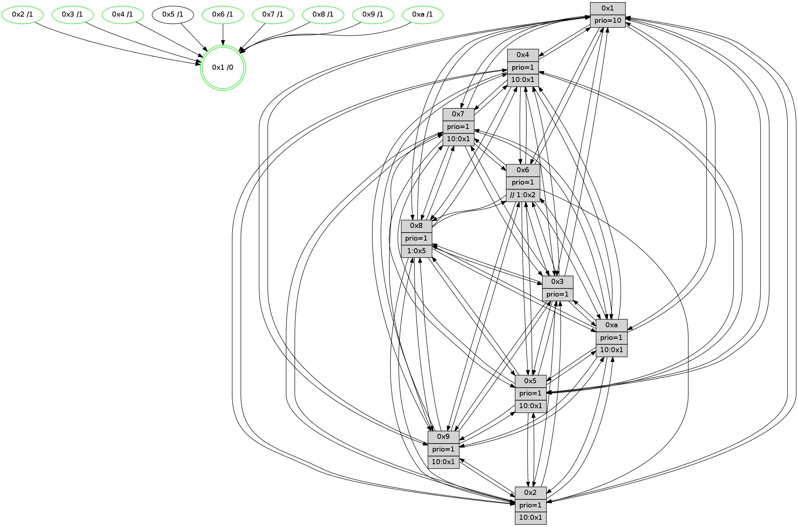

>> << IDX [start] -100 -25 -5 +0 +5 +25 [1625.55464697]
 Previous packets
----------------------------------------------------------------------
1620.037733 beacon01(faad) #0 coord=01,02,03,04,05,06,07,0a,09,08 cycle=688.0ms assoc
-- color-indic=1 64 96 ce
1620.047716 beacon02(faad) #0 coord=01,02,03,04,05,06,07,0a,09,08 cycle=688.0ms assoc 64 05 ff
1620.057715 beacon03(faad) #0 coord=01,02,03,04,05,06,07,0a,09,08 cycle=688.0ms assoc 64 7f b2
1620.067717 beacon04(faad) #0 coord=01,02,03,04,05,06,07,0a,09,08 cycle=688.0ms assoc 64 08 58
1620.077716 beacon05(faad) #0 coord=01,02,03,04,05,06,07,0a,09,08 cycle=688.0ms assoc 64 72 15
1620.087717 beacon06(faad) #0 coord=01,02,03,04,05,06,07,0a,09,08 cycle=688.0ms assoc 64 fc c2
1620.097716 beacon07(faad) #0 coord=01,02,03,04,05,06,07,0a,09,08 cycle=688.0ms assoc 64 86 8f
1620.107722 beacon0a(faad) #0 coord=01,02,03,04,05,06,07,0a,09,08 cycle=688.0ms assoc 64 f7 84
1620.127721 beacon08(faad) #0 coord=01,02,03,04,05,06,07,0a,09,08 cycle=688.0ms assoc 64 03 1e
1620.141191 [Hello(8): seq=976 sym=5,2,3,7,9,6,4,10,1 sysInfo=hasWarning stat=5:0,7,12,4/2:5,4,5,0/3:5,15,10,6/7:8,1,11,2/9:3,12,14,9/6:15,12,8,5/4:11,1,3,3/10:14,12,5,8/1:8,9,13,0]
1620.144225 [Hello(4): seq=1032 sym=5,8,6,2,3,9,7,10,1 sysInfo=hasWarning stat=5:9,4,3,6/8:2,7,8,1/6:15,14,0,7/2:1,2,7,5/3:5,4,14,2/9:14,7,3,6/7:8,2,8,3/10:0,0,11,1/1:9,5,8,1]
1620.147053 [Hello(10): seq=965 sym=6,2,3,8,7,5,9,4,1 sysInfo=hasWarning stat=6:11,14,5,10/2:2,2,8,4/3:10,6,0,1/8:6,4,10,8/7:9,12,4,2/5:7,1,10,5/9:5,11,2,0/4:1,2,0,0/1:6,4,9,1]
1620.149478 [Color(1) seq=712 @0:0 prio=10]
1620.152307 [Color(4) seq=549 @0:0 prio=1 >10.@1,1.@2,1.@3,1.@5]
1620.154361 [Hello(7): seq=1032 sym=2,3,5,6,8,4,9,10,1 sysInfo=hasWarning stat=2:6,11,4,8/3:10,2,10,8/5:9,15,1,7/6:4,4,4,2/8:0,10,11,3/4:4,11,7,2/9:8,9,10,5/10:10,1,1,1/1:7,13,7,0]
1620.156826 [Color(10) seq=609 @0:0 prio=1 >10.@1,1.@5,1.@6,1.@7]
1620.159232 [Hello(9): seq=976 sym=2,5,3,4,7,6,8,10,1 sysInfo=hasWarning stat=2:1,14,8,15/5:4,14,12,2/3:1,1,6,8/4:2,3,1,0/7:12,13,5,3/6:14,12,5,6/8:7,9,13,11/10:5,8,2,1/1:0,10,10,1]
1620.163670 [Color(9) seq=558 @0:0 prio=1 >10.@1,1.@5,1.@6,1.@7]
1620.166984 [Color(7) seq=539 @0:0 prio=1 >10.@1,1.@5,1.@6,1.@8]
----------------------------------------------------------------------
1620.825863 beacon01(faad) #0 coord=01,02,03,04,05,06,07,0a,09,08 cycle=688.0ms assoc
-- color-indic=1 64 52 c0
1620.835845 beacon02(faad) #0 coord=01,02,03,04,05,06,07,0a,09,08 cycle=688.0ms assoc 64 c1 f1
1620.845846 beacon03(faad) #0 coord=01,02,03,04,05,06,07,0a,09,08 cycle=688.0ms assoc 64 bb bc
1620.855846 beacon04(faad) #0 coord=01,02,03,04,05,06,07,0a,09,08 cycle=688.0ms assoc 64 cc 56
1620.865845 beacon05(faad) #0 coord=01,02,03,04,05,06,07,0a,09,08 cycle=688.0ms assoc 64 b6 1b
1620.875845 beacon06(faad) #0 coord=01,02,03,04,05,06,07,0a,09,08 cycle=688.0ms assoc 64 38 cc
1620.885845 beacon07(faad) #0 coord=01,02,03,04,05,06,07,0a,09,08 cycle=688.0ms assoc 64 42 81
1620.895852 beacon0a(faad) #0 coord=01,02,03,04,05,06,07,0a,09,08 cycle=688.0ms assoc 64 33 8a
1620.905851 beacon09(faad) #0 coord=01,02,03,04,05,06,07,0a,09,08 cycle=688.0ms assoc 64 bd 5d
1620.915852 beacon08(faad) #0 coord=01,02,03,04,05,06,07,0a,09,08 cycle=688.0ms assoc 64 c7 10
1620.928621 [Hello(5): seq=1033 sym=7,6,4,2,1,9,8,10,3 sysInfo=hasWarning stat=7:0,2,7,3/6:0,8,7,4/4:13,4,9,1/2:12,13,7,2/1:1,4,2,0/9:9,0,3,15/8:10,0,14,10/10:1,15,7,13/3:15,12,8,0]
1620.931653 [Hello(3): seq=1033 sym=1,7,6,2,4,8,9,10,5 sysInfo=hasWarning stat=1:10,1,15,0/7:13,4,12,1/6:1,2,1,0/2:7,6,3,0/4:8,1,8,1/8:7,1,15,10/9:4,4,1,4/10:13,12,8,9/5:4,4,14,4]
1620.935741 [Color(3) seq=662 @0:0 prio=1]
1620.938795 [Hello(2): seq=1029 sym=4,5,7,3,9,8,10,1 sysInfo=hasWarning stat=4:12,15,0,1/5:1,3,3,5/7:3,8,11,5/3:4,14,7,1/9:7,11,14,13/8:9,0,13,1/10:5,14,14,0/1:12,10,5,0]
1620.943074 [Color(8) seq=620 @0:0 prio=1 >1.@5,1.@6,1.@7,1.@9]
1620.946330 [Hello(6): seq=1033 sym=3,2,5,4,7,9,8,10,1 sysInfo=hasWarning stat=3:7,13,2,1/2:4,8,8,3/5:13,3,8,8/4:5,8,0,12/7:15,9,6,2/9:11,11,5,14/8:1,15,10,12/10:3,12,15,2/1:7,14,10,1]
1620.951346 [Color(2) seq=593 @0:0 prio=1 >10.@1,1.@3,1.@4,1.@5]
1620.954627 [Hello(1): seq=942 sym=4,2,9,5,10,3,8,6,7 asym= sysInfo=coloring-mode-on,ColoringModeRequestCalled stat=4:4,8,0,5/2:14,9,15,9/9:15,12,14,6/5:6,3,4,13/10:9,4,6,11/3:12,4,8,15/8:13,1,13,9/6:7,15,1,8/7:7,8,5,5]
1620.958398 [Color(6) seq=665 @0:0 prio=1 >>1.@2,1.@3,1.@4]
1620.963022 [STC(1) #0.296 new-neigh,tree-change,inconsistent-stability,stable,to-color d=0]
----------------------------------------------------------------------
1621.613995 beacon01(faad) #0 coord=01,02,03,04,05,06,07,0a,09,08 cycle=688.0ms assoc
-- color-indic=1 64 ee c5
1621.623977 beacon02(faad) #0 coord=01,02,03,04,05,06,07,0a,09,08 cycle=688.0ms assoc 64 7d f4
1621.633978 beacon03(faad) #0 coord=01,02,03,04,05,06,07,0a,09,08 cycle=688.0ms assoc 64 07 b9
1621.643978 beacon04(faad) #0 coord=01,02,03,04,05,06,07,0a,09,08 cycle=688.0ms assoc 64 70 53
1621.653980 beacon05(faad) #0 coord=01,02,03,04,05,06,07,0a,09,08 cycle=688.0ms assoc 64 0a 1e
1621.663979 beacon06(faad) #0 coord=01,02,03,04,05,06,07,0a,09,08 cycle=688.0ms assoc 64 84 c9
1621.673980 beacon07(faad) #0 coord=01,02,03,04,05,06,07,0a,09,08 cycle=688.0ms assoc 64 fe 84
1621.683984 beacon0a(faad) #0 coord=01,02,03,04,05,06,07,0a,09,08 cycle=688.0ms assoc 64 8f 8f
1621.703984 beacon08(faad) #0 coord=01,02,03,04,05,06,07,0a,09,08 cycle=688.0ms assoc 64 7b 15
1621.715289 [STC(2)->1 #0.296 new-neigh,tree-change,inconsistent-stability,stable,to-color d=1]
1621.716834 [STC(5)->1 #0.296 new-neigh,tree-change,inconsistent-stability,to-color d=1]
1621.719890 [Hello(4): seq=1033 sym=5,8,6,2,3,9,7,10,1 sysInfo=hasWarning stat=5:10,4,3,6/8:3,8,8,1/6:0,15,0,7/2:2,3,7,5/3:6,5,14,2/9:15,8,3,6/7:9,3,8,3/10:0,1,11,1/1:10,5,9,1]
1621.722533 [Hello(10): seq=966 sym=6,2,3,8,7,5,9,4,1 sysInfo=hasWarning stat=6:12,15,5,10/2:3,3,8,4/3:11,7,0,1/8:7,5,10,8/7:9,13,4,2/5:8,1,10,5/9:6,12,2,0/4:1,2,0,0/1:7,5,10,1]
1621.725086 [Color(1) seq=713 @0:0 prio=10]
1621.726374 [STC(4)->1 #0.296 new-neigh,tree-change,inconsistent-stability,stable,to-color d=1]
1621.728284 [STC(6)->1 #0.296 new-neigh,tree-change,inconsistent-stability,stable,to-color d=1]
1621.733922 [Color(4) seq=550 @0:0 prio=1 >10.@1,1.@2,1.@3,1.@5]
1621.736497 [STC(10)->1 #0.296 new-neigh,tree-change,inconsistent-stability,stable,to-color d=1]
1621.738380 [Hello(8): seq=977 sym=5,2,3,7,9,6,4,10,1 sysInfo=hasWarning stat=5:1,7,12,4/2:5,5,5,0/3:5,15,10,6/7:9,2,11,2/9:4,13,14,9/6:0,13,8,5/4:12,2,3,3/10:15,13,5,8/1:9,9,14,0]
1621.741231 [Hello(7): seq=1033 sym=2,3,5,6,8,4,9,10,1 sysInfo=hasWarning stat=2:7,12,4,8/3:11,3,10,8/5:10,15,1,7/6:5,5,4,2/8:1,11,11,3/4:4,11,7,2/9:8,9,10,5/10:10,1,1,1/1:8,13,8,0]
1621.744992 [STC(7)->1 #0.296 new-neigh,tree-change,inconsistent-stability,stable,to-color d=1]
1621.748156 [STC(3)->1 #0.296 new-neigh,tree-change,inconsistent-stability,stable,to-color d=1]
1621.750700 [Color(10) seq=610 @0:0 prio=1 >10.@1,1.@5,1.@6,1.@7]
1621.752340 [STC(8)->1 #0.296 new-neigh,tree-change,inconsistent-stability,stable,to-color d=1]
1621.755615 [Hello(9): seq=977 sym=2,5,3,4,7,6,8,10,1 sysInfo=hasWarning stat=2:2,15,8,15/5:5,14,12,2/3:2,2,6,8/4:2,3,1,0/7:12,14,5,3/6:15,13,5,6/8:8,10,13,11/10:5,8,2,1/1:1,10,11,1]
1621.759072 [STC(9)->1 #0.296 new-neigh,tree-change,inconsistent-stability,stable,to-color d=1]
1621.760666 [Color(7) seq=540 @0:0 prio=1 >10.@1,1.@5,1.@6,1.@8]
1621.762626 [Color(9) seq=559 @0:0 prio=1 >10.@1,1.@5,1.@6,1.@7]
----------------------------------------------------------------------
1622.402126 beacon01(faad) #0 coord=01,02,03,04,05,06,07,0a,09,08 cycle=688.0ms assoc
-- color-indic=1 64 da dd
1622.412107 beacon02(faad) #0 coord=01,02,03,04,05,06,07,0a,09,08 cycle=688.0ms assoc 64 49 ec
1622.422107 beacon03(faad) #0 coord=01,02,03,04,05,06,07,0a,09,08 cycle=688.0ms assoc 64 33 a1
1622.432110 beacon04(faad) #0 coord=01,02,03,04,05,06,07,0a,09,08 cycle=688.0ms assoc 64 44 4b
1622.442108 beacon05(faad) #0 coord=01,02,03,04,05,06,07,0a,09,08 cycle=688.0ms assoc 64 3e 06
1622.452109 beacon06(faad) #0 coord=01,02,03,04,05,06,07,0a,09,08 cycle=688.0ms assoc 64 b0 d1
1622.462109 beacon07(faad) #0 coord=01,02,03,04,05,06,07,0a,09,08 cycle=688.0ms assoc 64 ca 9c
1622.472113 beacon0a(faad) #0 coord=01,02,03,04,05,06,07,0a,09,08 cycle=688.0ms assoc 64 bb 97
1622.492126 beacon08(faad) #0 coord=01,02,03,04,05,06,07,0a,09,08 cycle=688.0ms assoc 64 4f 0d
1622.503358 [Hello(1): seq=943 sym=4,2,9,5,10,3,8,6,7 sysInfo=coloring-mode-on,ColoringModeRequestCalled stat=4:4,9,1,5/2:14,9,0,9/9:0,13,15,6/5:6,3,5,13/10:9,5,7,11/3:12,4,9,15/8:14,1,14,9/6:7,15,2,8/7:8,9,6,5]
1622.508048 [Hello(6): seq=1034 sym=3,2,5,4,7,9,8,10,1 sysInfo=hasWarning stat=3:7,13,3,1/2:4,8,8,3/5:14,3,8,8/4:5,9,0,12/7:0,10,7,2/9:12,12,6,14/8:2,15,11,12/10:3,13,0,2/1:7,14,11,1]
1622.510866 [Color(6) seq=666 @0:0 prio=1 >>1.@2,1.@3,1.@4]
1622.512724 [Color(8) seq=621 @0:0 prio=1 >1.@5,1.@6,1.@7,1.@9]
1622.515517 [Hello(5): seq=1034 sym=7,6,4,2,1,9,8,10,3 sysInfo=hasWarning stat=7:1,3,8,3/6:1,9,8,4/4:14,5,10,1/2:13,14,7,2/1:2,5,3,0/9:10,1,4,15/8:11,1,15,10/10:2,0,8,13/3:0,13,9,0]
1622.518792 [Hello(2): seq=1030 sym=4,5,7,3,9,8,10,1 sysInfo=hasWarning stat=4:13,0,1,1/5:2,3,4,5/7:4,9,12,5/3:4,14,8,1/9:8,12,15,13/8:10,0,14,1/10:6,15,15,0/1:13,11,6,0]
1622.522963 [Hello(3): seq=1034 sym=1,7,6,2,4,8,9,10,5 sysInfo=hasWarning stat=1:11,1,0,0/7:13,5,12,1/6:2,3,1,0/2:8,7,3,0/4:8,1,8,1/8:7,2,0,10/9:5,5,2,4/10:13,13,8,9/5:5,4,14,4]
1622.525779 [Color(3) seq=663 @0:0 prio=1]
1622.536781 [Color(2) seq=594 @0:0 prio=1 >10.@1,1.@3,1.@4,1.@5]
----------------------------------------------------------------------
1623.190256 beacon01(faad) #0 coord=01,02,03,04,05,06,07,0a,09,08 cycle=688.0ms assoc
-- color-indic=1 64 66 d8
1623.200238 beacon02(faad) #0 coord=01,02,03,04,05,06,07,0a,09,08 cycle=688.0ms assoc 64 f5 e9
1623.210238 beacon03(faad) #0 coord=01,02,03,04,05,06,07,0a,09,08 cycle=688.0ms assoc 64 8f a4
1623.220240 beacon04(faad) #0 coord=01,02,03,04,05,06,07,0a,09,08 cycle=688.0ms assoc 64 f8 4e
1623.230240 beacon05(faad) #0 coord=01,02,03,04,05,06,07,0a,09,08 cycle=688.0ms assoc 64 82 03
1623.240240 beacon06(faad) #0 coord=01,02,03,04,05,06,07,0a,09,08 cycle=688.0ms assoc 64 0c d4
1623.250239 beacon07(faad) #0 coord=01,02,03,04,05,06,07,0a,09,08 cycle=688.0ms assoc 64 76 99
1623.260243 beacon0a(faad) #0 coord=01,02,03,04,05,06,07,0a,09,08 cycle=688.0ms assoc 64 07 92
1623.280244 beacon08(faad) #0 coord=01,02,03,04,05,06,07,0a,09,08 cycle=688.0ms assoc 64 f3 08
1623.293061 [Hello(8): seq=978 sym=5,2,3,7,9,6,4,10,1 sysInfo=hasWarning stat=5:2,7,12,4/2:6,6,5,0/3:6,0,10,6/7:9,3,11,2/9:5,14,15,9/6:0,13,8,5/4:12,2,3,3/10:15,13,5,8/1:10,9,14,0]
1623.296101 [Hello(10): seq=967 sym=6,2,3,8,7,5,9,4,1 sysInfo=hasWarning stat=6:13,0,5,10/2:4,4,9,4/3:12,8,0,1/8:7,6,11,8/7:9,14,4,2/5:9,1,11,5/9:7,13,3,0/4:1,2,0,0/1:8,5,10,1]
1623.299441 [Color(1) seq=714 @0:0 prio=10]
1623.301113 [Hello(7): seq=1034 sym=2,3,5,6,8,4,9,10,1 sysInfo=hasWarning stat=2:8,13,5,8/3:12,4,10,8/5:11,15,2,7/6:6,6,4,2/8:1,12,11,3/4:4,11,7,2/9:8,10,10,5/10:10,1,1,1/1:9,13,8,0]
1623.303728 [Hello(4): seq=1034 sym=5,8,6,2,3,9,7,10,1 sysInfo=hasWarning stat=5:11,4,4,6/8:4,9,9,1/6:1,0,0,7/2:3,4,8,5/3:7,6,15,2/9:0,9,4,6/7:10,4,9,3/10:0,2,12,1/1:11,5,9,1]
1623.306546 [Color(4) seq=551 @0:0 prio=1 >10.@1,1.@2,1.@3,1.@5]
1623.308844 [Hello(9): seq=978 sym=2,5,3,4,7,6,8,10,1 sysInfo=hasWarning stat=2:3,0,9,15/5:6,14,13,2/3:3,3,6,8/4:2,3,1,0/7:12,14,5,3/6:0,14,5,6/8:8,11,13,11/10:5,8,2,1/1:2,10,11,1]
1623.313285 [Color(9) seq=560 @0:0 prio=1 >10.@1,1.@5,1.@6,1.@7]
1623.317949 [Color(7) seq=541 @0:0 prio=1 >10.@1,1.@5,1.@6,1.@8]
1623.327288 [Color(10) seq=611 @0:0 prio=1 >10.@1,1.@5,1.@6,1.@7]
----------------------------------------------------------------------
1623.978388 beacon01(faad) #0 coord=01,02,03,04,05,06,07,0a,09,08 cycle=688.0ms assoc
-- color-indic=1 64 a2 d6
1623.988370 beacon02(faad) #0 coord=01,02,03,04,05,06,07,0a,09,08 cycle=688.0ms assoc 64 31 e7
1623.998369 beacon03(faad) #0 coord=01,02,03,04,05,06,07,0a,09,08 cycle=688.0ms assoc 64 4b aa
1624.008370 beacon04(faad) #0 coord=01,02,03,04,05,06,07,0a,09,08 cycle=688.0ms assoc 64 3c 40
1624.018372 beacon05(faad) #0 coord=01,02,03,04,05,06,07,0a,09,08 cycle=688.0ms assoc 64 46 0d
1624.028369 beacon06(faad) #0 coord=01,02,03,04,05,06,07,0a,09,08 cycle=688.0ms assoc 64 c8 da
1624.038370 beacon07(faad) #0 coord=01,02,03,04,05,06,07,0a,09,08 cycle=688.0ms assoc 64 b2 97
1624.048375 beacon0a(faad) #0 coord=01,02,03,04,05,06,07,0a,09,08 cycle=688.0ms assoc 64 c3 9c
1624.068375 beacon08(faad) #0 coord=01,02,03,04,05,06,07,0a,09,08 cycle=688.0ms assoc 64 37 06
1624.079293 [Hello(1): seq=944 sym=4,2,9,5,10,3,8,6,7 sysInfo=coloring-mode-on,ColoringModeRequestCalled stat=4:5,10,1,5/2:15,10,0,9/9:1,14,15,6/5:7,3,5,13/10:9,6,7,11/3:13,5,9,15/8:15,2,14,9/6:8,0,2,8/7:9,10,6,5]
1624.083078 [Color(8) seq=622 @0:0 prio=1 >1.@5,1.@6,1.@7,1.@9]
1624.084867 [Hello(2): seq=1031 sym=4,5,7,3,9,8,10,1 sysInfo=hasWarning stat=4:14,1,1,1/5:2,3,4,5/7:5,10,12,5/3:4,14,8,1/9:9,13,15,13/8:11,0,14,1/10:7,0,15,0/1:14,12,6,0]
1624.087320 [Hello(6): seq=1035 sym=3,2,5,4,7,9,8,10,1 sysInfo=hasWarning stat=3:8,14,3,1/2:5,9,8,3/5:15,3,8,8/4:6,10,0,12/7:1,11,7,2/9:13,13,6,14/8:3,0,11,12/10:4,14,0,2/1:8,15,11,1]
1624.090761 [Color(6) seq=667 @0:0 prio=1 >>1.@2,1.@3,1.@4]
1624.092917 [Hello(5): seq=1035 sym=7,6,4,2,1,9,8,10,3 sysInfo=hasWarning stat=7:2,4,8,3/6:1,9,8,4/4:15,6,10,1/2:14,15,7,2/1:2,6,3,0/9:11,2,4,15/8:12,1,15,10/10:3,1,8,13/3:1,14,9,0]
1624.097273 [Hello(3): seq=1035 sym=1,7,6,2,4,8,9,10,5 sysInfo=hasWarning stat=1:12,2,0,0/7:14,6,12,1/6:2,3,1,0/2:8,8,3,0/4:9,2,8,1/8:8,2,0,10/9:6,6,2,4/10:14,14,8,9/5:5,4,14,4]
1624.101065 [Color(3) seq=664 @0:0 prio=1]
1624.106002 [Color(2) seq=595 @0:0 prio=1 >10.@1,1.@3,1.@4,1.@5]
----------------------------------------------------------------------
1624.766518 beacon01(faad) #0 coord=01,02,03,04,05,06,07,0a,09,08 cycle=688.0ms assoc
-- color-indic=1 64 1e d3
1624.776499 beacon02(faad) #0 coord=01,02,03,04,05,06,07,0a,09,08 cycle=688.0ms assoc 64 8d e2
1624.786500 beacon03(faad) #0 coord=01,02,03,04,05,06,07,0a,09,08 cycle=688.0ms assoc 64 f7 af
1624.796501 beacon04(faad) #0 coord=01,02,03,04,05,06,07,0a,09,08 cycle=688.0ms assoc 64 80 45
1624.806501 beacon05(faad) #0 coord=01,02,03,04,05,06,07,0a,09,08 cycle=688.0ms assoc 64 fa 08
1624.816502 beacon06(faad) #0 coord=01,02,03,04,05,06,07,0a,09,08 cycle=688.0ms assoc 64 74 df
1624.826503 beacon07(faad) #0 coord=01,02,03,04,05,06,07,0a,09,08 cycle=688.0ms assoc 64 0e 92
1624.836507 beacon0a(faad) #0 coord=01,02,03,04,05,06,07,0a,09,08 cycle=688.0ms assoc 64 7f 99
1624.856507 beacon08(faad) #0 coord=01,02,03,04,05,06,07,0a,09,08 cycle=688.0ms assoc 64 8b 03
1624.868688 [Hello(8): seq=979 sym=5,2,3,7,9,6,4,10,1 sysInfo=hasWarning stat=5:3,7,12,4/2:7,7,5,0/3:7,1,10,6/7:10,4,11,2/9:6,15,15,9/6:1,14,8,5/4:13,3,3,3/10:0,14,5,8/1:11,10,14,0]
1624.871721 [Hello(7): seq=1035 sym=2,3,5,6,8,4,10,1 sysInfo=hasWarning stat=2:9,14,5,8/3:13,5,10,8/5:12,15,2,7/6:7,7,4,2/8:2,13,11,3/4:4,11,7,2/10:10,2,1,1/1:10,13,8,0]
1624.874740 [Hello(10): seq=968 sym=6,2,3,8,7,5,9,4,1 sysInfo=hasWarning stat=6:14,1,5,10/2:5,5,9,4/3:13,9,0,1/8:8,7,11,8/7:9,14,4,2/5:10,1,11,5/9:7,13,3,0/4:1,2,0,0/1:9,5,10,1]
1624.877877 [Color(9) seq=561 @0:0 prio=1 >10.@1,1.@5,1.@6,1.@7]
1624.880617 [Color(7) seq=542 @0:0 prio=1 >10.@1,1.@5,1.@6,1.@8]
1624.882885 [Hello(4): seq=1035 sym=5,8,6,2,3,9,7,10,1 sysInfo=hasWarning stat=5:12,4,4,6/8:5,10,9,1/6:2,1,0,7/2:4,5,8,5/3:8,7,15,2/9:1,10,4,6/7:10,5,9,3/10:0,3,12,1/1:12,5,9,1]
1624.887926 [Color(4) seq=552 @0:0 prio=1 >10.@1,1.@2,1.@3,1.@5]
1624.891330 [STC(1) #0.297 new-neigh,tree-change,inconsistent-stability,stable,to-color d=0]
1624.892971 [Color(1) seq=715 @0:0 prio=10]
1624.899101 [Color(10) seq=612 @0:0 prio=1 >10.@1,1.@5,1.@6,1.@7]